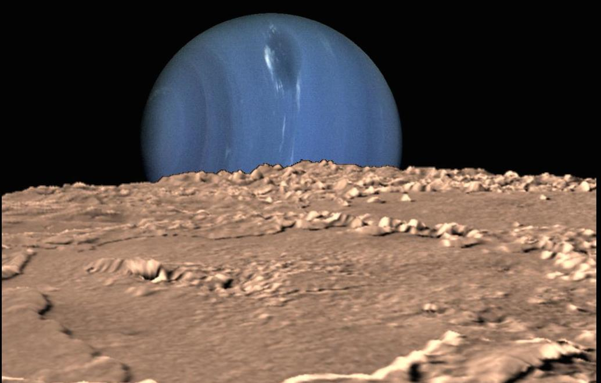
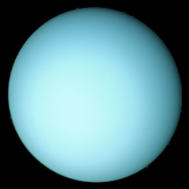
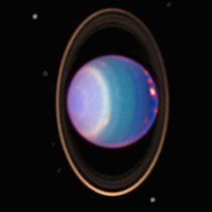

Uranus
What planet is this???

It's Neptune.


THIS is Uranus.
Intro
Uranus and Neptune are considered “twin planets” in terms of size, internal structure, and color. There is little data on Uranus because only one space probe, the Voyager 2, has flown past it in 1986 to collect pictures and information on this gas giant.
History
Uranus was first seen by Galileo, but it was officially recognized as a planet by Sir William Herschel in 1781. He was primarily a composer and musician, and only an amatuer astronomer. William Herschel also wanted to name his new discovery “Georgian Sidus” after King George III, but astronomer Johann Bode suggested Uranus, after a sky God in Greek mythology. The planet has 27 known moons; among them are Oberon, Titania, and Miranda, that are all named after characters made by Shakespeare and Alexander Pope.
Characteristics
Uranus has 13 rings, with 2 that are dusty and faint. It’s atmosphere is composed of 83 percent hydrogen, 15 percent helium, 2 percent methane (that’s what absorbs the red light and reflects the blue portion that gives Uranus its color), and trace amounts of ammonia, water, and ethane. It also has a rocky core and a tilted axis that is at 98°, from what is believed as a collision with an Earth-sized planet. Uranus is often referred to as the “ice giant,” because it has the coldest temperature of any planet, its average being -323°F.
Orbit and Rotation
Since Uranus is the 7th planet from the sun, it takes 30,685 days (84 years) for it to complete one orbit around the sun. One rotation around its axis takes 17 hrs. and 14 min. for the planet’s interior, but much of the atmosphere rotates much quicker than that. It is also one of the three planets in our solar system with a retrograde rotation.
These are the symbols of Uranus.
⛢ ♅
Bibliography
Elkins-Tanton, Linda T. Uranus, Neptune, Pluto, And the Outer Solar System. New York, NY: Facts on File, 2006. Print.
“Uranus Facts - Interesting Facts About the Planet Uranus.” Space Facts RSS. N.p., Feb. 2012. Web. 22 May 2015. <http://space-facts.com/uranus/>
“Uranus, Uranus Information, Facts, News, Photos -- National Geographic.” National Geographic. N.p., n.d. Web. 22 May 2015. <http://science.nationalgeographic.com/science/space/solar-system/uranus-article/>
“World Book Online Reference Center | Online Reference Book| Online Encyclopedia.” World Book. N.p., n.d. Web. 21 May 2015. <http://classic.worldbookonline.com/student/article?id=ar577720&st=uranus>
Images
“Planet Uranus - The Solar System On Sea and Sky.” Planet Uranus - The Solar System on Sea and Sky. N.p., n.d. Web. 23 May 2015. <http://www.seasky.org/solar-system/uranus.html>
“Rings Around The Planets.” Solar System Exploration. N.p., n.d. Web. 23 May 2015. <http://solarsystem.nasa.gov/news/rings_around_the_planets.cfm>
“Solar System Exploration.” Solar System Exploration. N.p., n.d. Web. 25 May 2015. <http://solarsystem.nasa.gov/index.cfm>